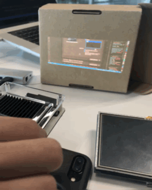
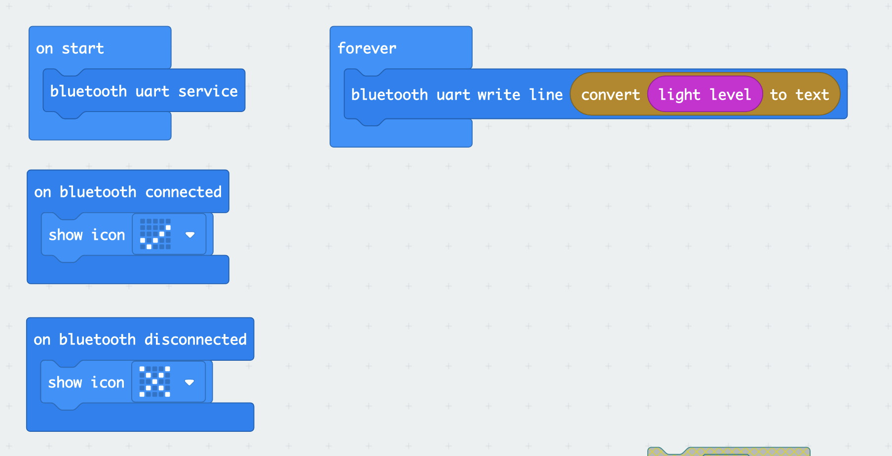
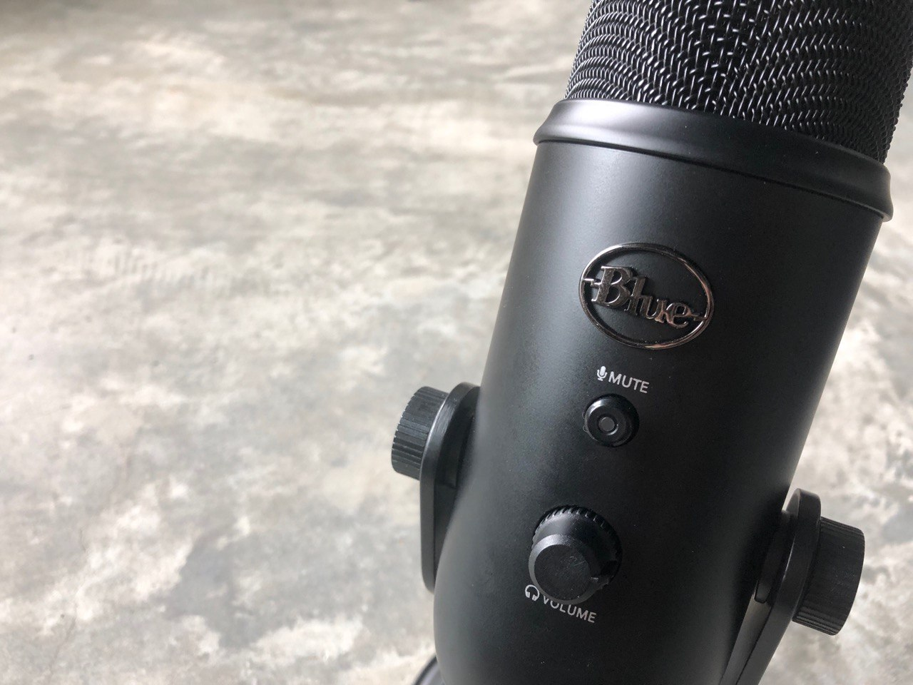

Nil. This week, Yuta shared the components he had with us.
To project our pet's face, we tried out the mini projector.
However, we thought that using a lcd screen to show the face on a box would be most pet-like!

For our light inputs, we needed to use the microbit's built-in light sensors. Hence, we tried utilising the bluetooth function.

And for our audio inputs, we tried to use the microphone component. However, we faced problems as the readings collected were very erractic.
Hence, we decided to use an external microphone instead - a Blue Yeti. This detachment from the box made our pet less realistic,
but every cloud has a silver lining - this allowed us to achieve greater clarity in sensing audio changes!

On a side note, here's a recap of our Object Model analysis.
| Week No. | Object | Property | Method/Action |
|---|---|---|---|
| 2 - 5 | Box |
|
|
| 5 - 7 | Pet box |
|
|
| 7 | Pringles scream box |
|
|